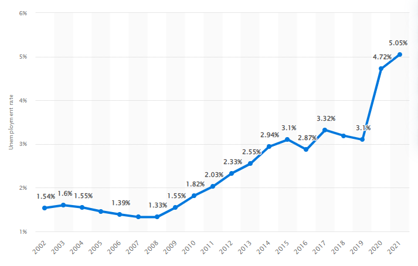

Nepal and Unemployment
Unemployment and Nepalese Economy

Nepal has a population of 26.5 million which is growing fast, resulting in a young country with 63.7 per cent of the total population below the age of 30.
The unemployment rate for youth aged 15-29 is 19.2 per cent compared to 2.7 percent for the whole population. Over 400,000 young people are estimated to enter the labour force every year. These figures indicate the quantitative dimension of the employment challenge in Nepal.
The unemployment rate in Nepal increased by 0.3 percentage points in 2021 in comparison to the previous year. With 5.05 percent, the unemployment rate thereby reached its highest value in the observed period.
The unemployment rate refers to the share of the economically active population currently without work but in search of employment. The unemployment rate does not include economically inactive persons such as the long-term unemployed, children, or retirees.